Análisis del comportamiento de las acciones de cinco gigantes
tecnológicos (AAPL: Apple, GOOGL:
Alphabet, MSFT: Microsoft, MSFT:
Amazon y META: Meta) durante el periodo de 2020 a
2022, que incluyó la época de la pandemia de COVID-19. Con el objetivo
de entender si invertir en estas acciones fue un negocio rentable o un
riesgo excesivo.
Utilizaremos una métrica muy útil para entender la rentabilidad de una
inversión en relación al riesgo que se asume, el
índice de Sharpe.
¿Qué es este indice?
El índice de Sharpe (Sharpe Ratio en inglés) es una medida de
rendimiento ajustado al riesgo de una inversión o cartera. Fue creada
por William F. Sharpe en 1966 y se utiliza comunmente como una
forma de evaluar el desempeño de los fondos de inversión y otros tipos
de carteras de inversión.
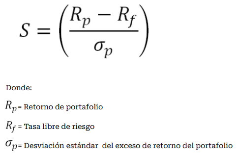
Un Sharpe Ratio alto indica que el rendimiento obtenido es es superior
al que cabría esperar en relación con el riesgo asumido, mientras que
un Sharpe Ratio bajo indica lo contrario.
DATOS
Los datos financieros utilizados en este proyecto fueron obtenidos a
través de la librería yfinance de Python. Esta librería permite
descargar datos históricos y en tiempo real de una amplia variedad de
instrumentos financieros de
!Yahoo Finance. Sin más preámbulos comencemos...
Una primera mirada a los datos
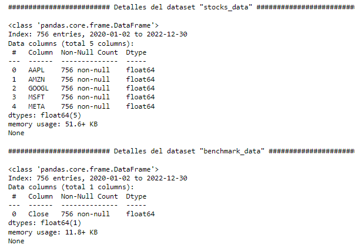
El dataset "stocks_data" contiene el dato de cierre diario de
las acciones de 5 compañías diferentes
(AAPL, AMZN, GOOGL, MSFT, META) desde el 2 de enero de 2020
hasta el 30 de diciembre de 2022. Hay un total de 756 observaciones
y 5 variables, todas son de tipo float64.
Por otro lado, el dataset "benchmark_data" contiene el dato
de cierre diario del índice S&P500 desde el 2 de enero de
2020 hasta el 30 de diciembre de 2022. Hay un total de 756
observaciones y 1 variable, que es de tipo float64.
Es importante tener una comprensión clara de los datos antes de
comparar una inversión en Apple, Amazon, Google, Microsoft o Meta
con el índice S&P 500.
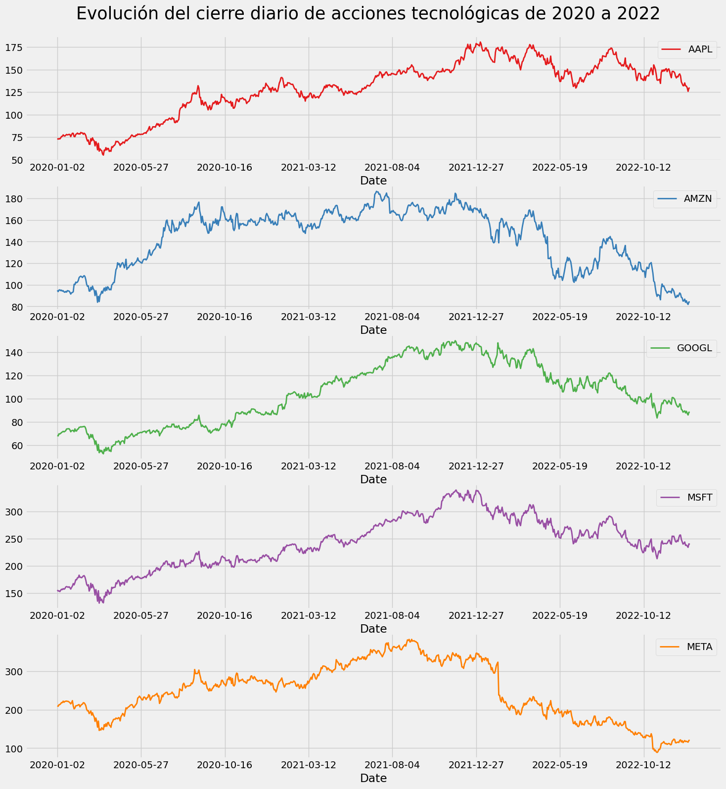
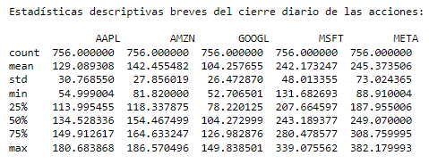
AAPL: El precio de cierre diario de las acciones de Apple
(AAPL) tiene una media de U$S 129.09, con una desviación estándar de
U$S 30.77. El precio mínimo fue de U$S 54.99 y el máximo de U$S
180.68.
AMZN: El precio de cierre diario de las acciones de Amazon
(AMZN) tiene una media de U$S 142.46, con una desviación estándar de
U$S 27.86. El precio mínimo fue de U$S 81.82 y el máximo de U$S
186.57.
GOOGL: El precio de cierre diario de las acciones de Alphabet
Inc., clase A (GOOGL) tiene una media de U$S 104.26, con una
desviación estándar de U$S 26.47. El precio mínimo fue de U$S 52.71
y el máximo de U$S 149.84.
MSFT: El precio de cierre diario de las acciones de Microsoft
(MSFT) tiene una media de U$S 242.17, con una desviación estándar de
U$S 48.01. El precio mínimo fue de U$S 131.68 y el máximo de U$S
339.08.
META: El precio de cierre diario de las acciones de Meta
Platforms Inc. (META) tiene una media de U$S 245.37, con una
desviación estándar de U$S 73.02. El precio mínimo fue de U$S 88.91
y el máximo de U$S 382.18.
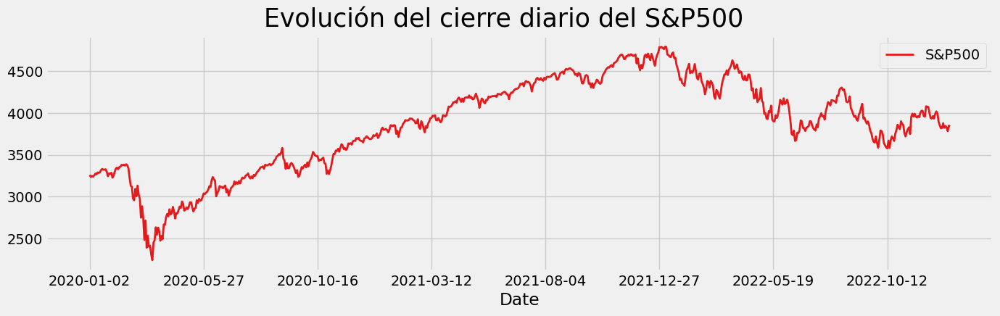
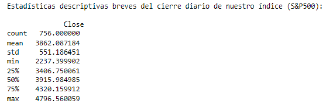
Los datos muestran que el índice S&P500 ha tenido un promedio de
cierre diario de alrededor de U$S 3862.09.
Una desviación estándar de aproximadamente U$S 551.19.
El valor mínimo del cierre diario del índice fue de U$S 2237.40,
mientras que el valor máximo fue de U$S 4796.56.
Lo primero que necesitamos para calcular el Sharpe Ratio es el
retorno de las aciones, pero los datos disponibles son el valor
histórico de cierre de cada una. Por lo tanto, se debe calcular el
cambio porcentual en valor de un día a otro para obtener el retorno
diario.
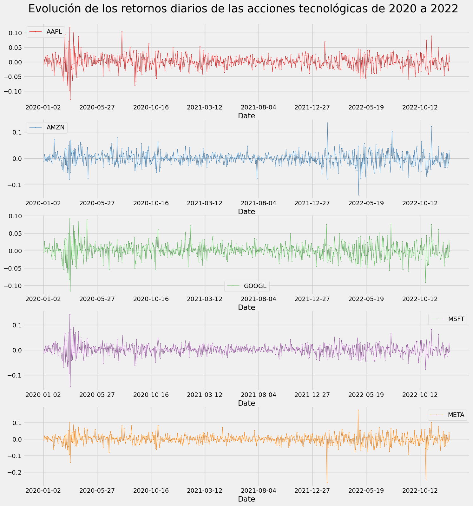
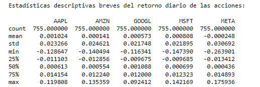
AAPL: El retorno promedio diario es del 0.1%, con una
desviación estándar del 2.3%. El rango de retorno diario se
encuentra entre -12.9% y 11.9%. Los cuartiles sugieren que alrededor
del 50% de los días, el retorno diario se encuentra dentro del rango
del -1.1% al 1.4%.
AMZN: El retorno promedio diario es del 0.01%, con una
desviación estándar del 2.5%. El rango de retorno diario se
encuentra entre -14.0% y 13.5%. Los cuartiles sugieren que alrededor
del 50% de los días, el retorno diario se encuentra dentro del rango
del -1.3% al 1.2%.
GOOGL: El retorno promedio diario es del 0.05%, con una
desviación estándar del 2.2%. El rango de retorno diario se
encuentra entre -11.6% y 9.2%. Los cuartiles sugieren que alrededor
del 50% de los días, el retorno diario se encuentra dentro del rango
del -0.9% al 1.2%.
MSFT: El retorno promedio diario es del 0.08%, con una
desviación estándar del 2.2%. El rango de retorno diario se
encuentra entre -14.7% y 14.2%. Los cuartiles sugieren que alrededor
del 50% de los días, el retorno diario se encuentra dentro del rango
del -1.0% al 1.2%.
META: El retorno promedio diario es del -0.02%, con una
desviación estándar del 3.1%. El rango de retorno diario se
encuentra entre -26.4% y 17.6%. Los cuartiles sugieren que alrededor
del 50% de los días, el retorno diario se encuentra dentro del rango
del -1.3% al 1.5%.
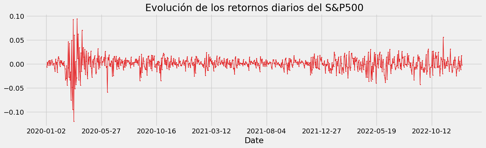
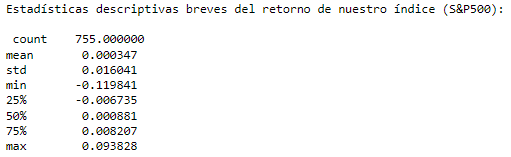
El S&P500 tuvo un retorno diario promedio de 0.03%, con una
desviación estándar de 1.6%.
El retorno mínimo diario fue de -11.98% y el máximo fue de 9.38%.
EL %50 de los retornos diarios estuvo por debajo del 0.09%.
Además, el primer cuartil de los retornos diarios fue de -0.67%, lo
que significa que el 25% de los días el retorno diario estuvo por
debajo de ese valor, mientras que el tercer cuartil fue del 0.82%,
es decir, que el 75% de los días el retorno diario estuvo por debajo
de ese valor.
Lo siguiente que necesitamos hacer es calcular el desempeño
relativo de nuestras acciones ajustadas a nuestro índice, esto se
conoce como "Exceso de retorno"
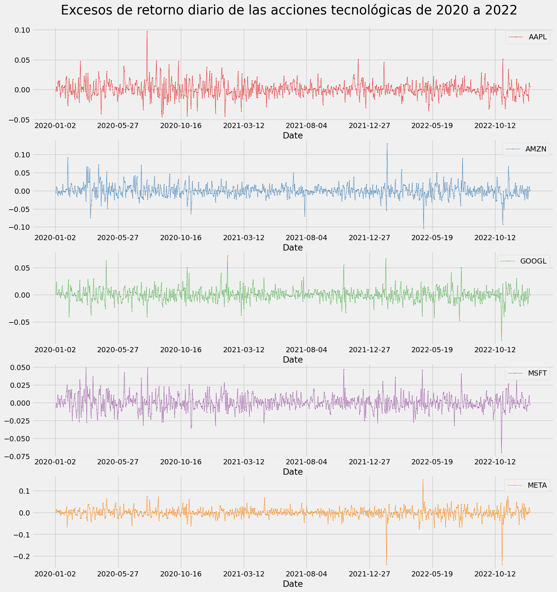
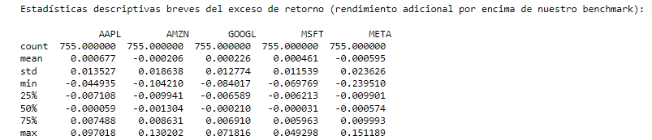
Antes de comenzar a calcular nuestro Sharpe Ratio sacaremos
algunas conclusiones de nuestros excesos de retorno:
En general, las cinco acciones tienen medias de exceso de
retorno cercanas a cero, lo que sugiere que no hubo una
tendencia clara de superar o quedar por debajo del índice en el
período analizado. Sin embargo, hay algunas diferencias notables
entre las acciones.
AAPL y GOOGL tienen medias positivas de exceso de retorno, lo
que indica que en promedio superaron al S&P500. Además, ambas
acciones tienen un valor máximo de exceso de retorno bastante
alto, lo que sugiere que en algunos días tuvieron un rendimiento
significativamente mejor que el índice.
AMZN y META, por otro lado, tienen medias negativas de exceso de
retorno, lo que indica que en promedio quedaron por debajo del
S&P500. Además, ambas acciones tienen valores mínimos de exceso
de retorno bastante bajos, lo que sugiere que en algunos días
tuvieron un rendimiento significativamente peor que el índice.
MSFT es la única acción que tiene una media positiva de exceso
de retorno y no tiene valores extremos tanto en el lado positivo
como en el negativo, lo que indica un rendimiento relativamente
estable y consistente en comparación con las otras acciones.
En resumen, aunque las acciones tienen medias de exceso de
retorno cercanas a cero, hay algunas diferencias notables en
cuanto a la variabilidad y consistencia del rendimiento en
comparación con el S&P500.
Y ahora damas y caballeros...
¡Ha llegado el momento de calcular el Sharpe Ratio!
Después de analizar nuestro dataset de retornos excesivos, hemos
decidido dividir los datos en tres años consecutivos: 2020, 2021 y
2022. 1. Lo siguiente es obtener el promedio de cada
acción en cada uno de estos años para poder realizar los cálculos
necesarios.
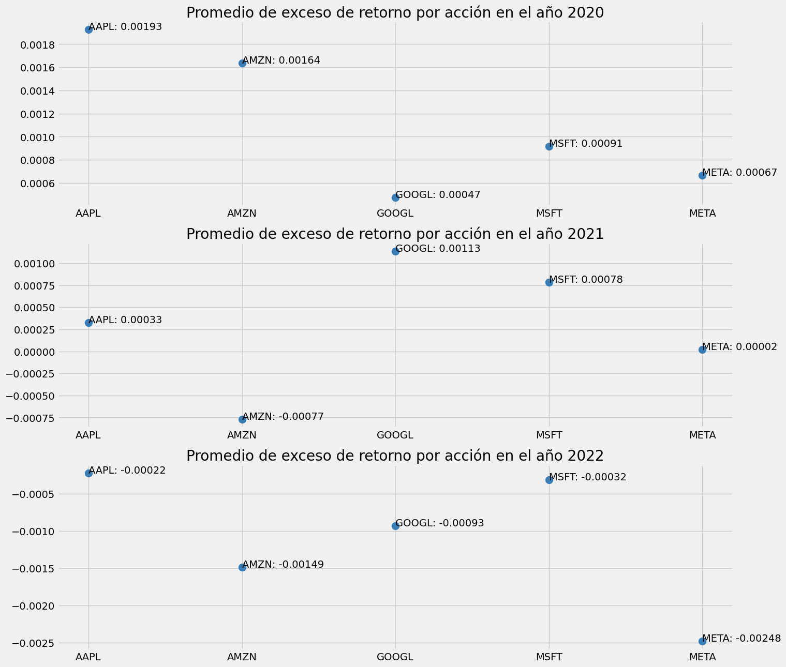
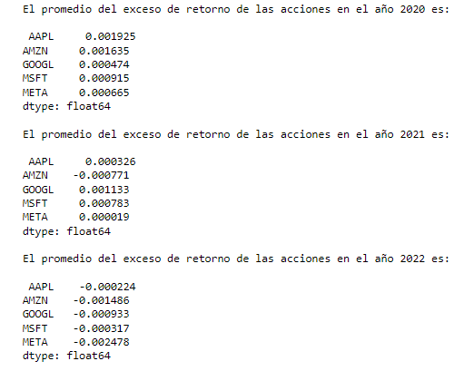
En 2020, todas las acciones presentaron un exceso de retorno
positivo, lo que sugiere que todas ellas superaron el rendimiento del
mercado en general.
En 2021, las acciones tuvieron un rendimiento mixto, con
algunas acciones con un exceso de retorno positivo y otras con un
exceso de retorno negativo.
En 2022, todas las acciones presentaron un exceso de retorno
negativo, lo que indica que todas ellas tuvieron un rendimiento
inferior al del mercado en general.
2. Lo siguiente que debemos hacer es calcular
la desviación estándar de los excesos de retorno para cada año. Esto no
dará una visión de la volatilidad o riesgo de las acciones comparadas
con una inversión en S&P500
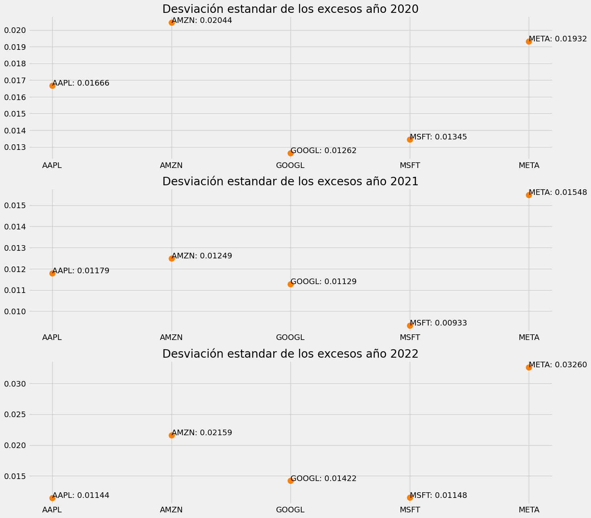
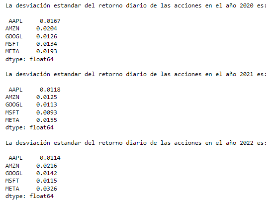
Para el año 2020, la acción más volátil fue AMZN con una
desviación estándar del retorno diario del 2.04%, seguida de META con
1.93%.
La acción menos volátil en 2020 fue GOOGL con una desviación
estándar del retorno diario del 1.26%.
Para el año 2021, la acción más volátil fue META con una
desviación estándar del retorno diario del 1.55%.
La acción menos volátil en 2021 fue MSFT con una desviación
estándar del retorno diario del 0.93%.
Para el año 2022, la acción más volátil fue META con una
desviación estándar del retorno diario del 3.26%. La compañía ya fue
la más volátil en 2020, pero su volatilidad se incrementó aún más en
2022.
La acción menos volátil en 2022 fue AAPL con una desviación
estándar del retorno diario del 1.14%.
Calculamos el Sharpe Ratio: Para recapitulizar un poco...
Primero se divide el promedio de los excesos de retorno (calculado en
el punto 1) por la desviación estándar de los excesos de retorno
(calculado en el punto 2).
El resultado de esta división es el Sharpe Ratio, que indica cuánto
más o menos retorno tiene la oportunidad de inversión coniderada por
unidad de riesgo.
Luego el Sharpe Ratio se anualiza multiplicándolo por la raíz cuadrada
del número de período (en este caso, días de negociación) en un año.
Esto hace que sea más fácil comparar el Sharpe Ratio entre
diferentes inversiones y en diferentes períodos de tiempo.
Después de aplicar la magia de los números y las estadísticas
menocinados anteriormente, aquí estan los resultados que no te dejarán
indiferente (o al menos, espero que no te pongan a dormir) :
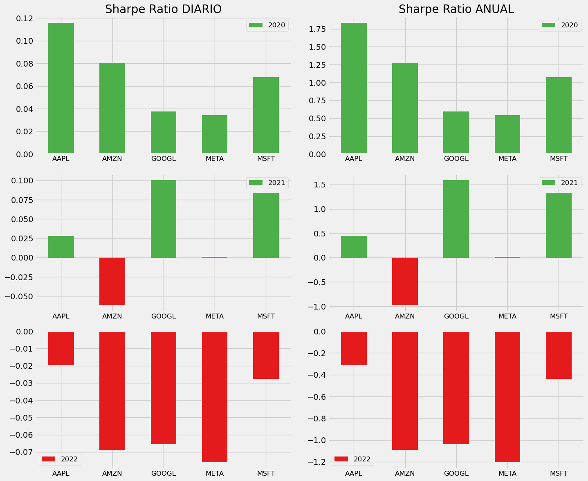
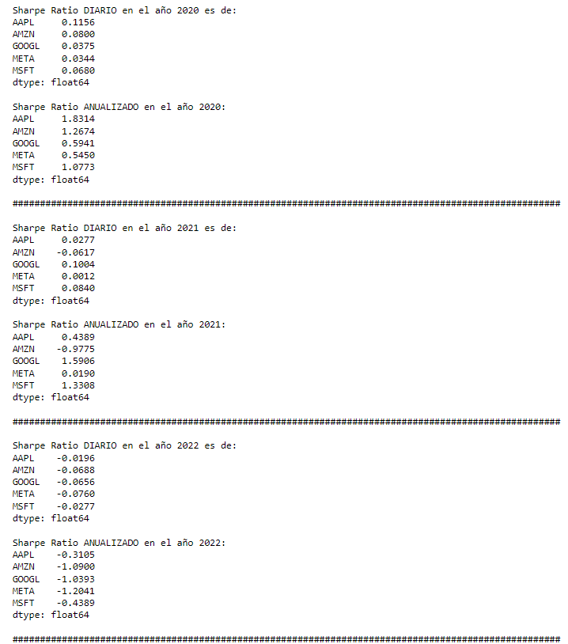
En el año 2020, todas las acciones tuvieron Sharpe Ratios
diarios positivos, lo que indica que su rendimiento ajustado al riesgo
fue positivo durante el año. AAPL tuvo el Sharpe Ratio diario más
alto, lo que sugiere que tuvo el mejor desempeño ajustado al riesgo
diario entre las acciones mencionadas.
Al considerar los Sharpe Ratios anualizados en el año 2020, AAPL
también tuvo el mejor desempeño ajustado al riesgo, seguido por AMZN.
GOOGL, META y MSFT tuvieron Sharpe Ratios anualizados inferiores a 1,
lo que sugiere que su rendimiento ajustado al riesgo durante el año
fue inferior al de AAPL y AMZN.
En el año 2021, GOOGL tuvo el Sharpe Ratio diario más alto, lo
que sugiere que tuvo el mejor desempeño ajustado al riesgo diario
entre las acciones mencionadas. Sin embargo, AMZN tuvo un Sharpe Ratio
diario negativo, lo que sugiere que su rendimiento no fue suficiente
para compensar el riesgo tomado.
Al considerar los Sharpe Ratios anualizados en el año 2021, GOOGL tuvo
el mejor desempeño ajustado al riesgo, seguido por AAPL y MSFT. AMZN y
META tuvieron Sharpe Ratios anualizados negativos, lo que sugiere que
su rendimiento ajustado al riesgo durante el año fue inferior al de
las demás acciones.
En el año 2022, todas las acciones tuvieron Sharpe Ratios
diarios y anualizados negativos, lo que sugiere que su rendimiento no
fue suficiente para compensar el riesgo tomado durante el año.
En general, podemos concluir que AAPL y GOOGL tuvieron un
mejor desempeño ajustado al
riesgo durante los años 2020 y 2021, mientras que en el
año 2022 todas las acciones tuvieron un rendimiento ajustado al
riesgo negativo.
Conclusiones finales
La pandemia de COVID-19 ha tenido un gran impacto en la economía
mundial y en los mercados financieros. Por lo tanto, es probable haya
afectado los resultados de las acciones mencionadas durante los años
2020, 2021 y 2022.
En el año 2020, vimos que todas las acciones mencionadas tuvieron
Sharpe Ratios diarios y anualizados positivos. Sin embargo, es
importante tener en cuenta que el mercado de valores experimentó una
caída significativa en marzo de 2020 debido a la pandemia, pero se
recuperó posteriormente a medida que los gobiernos y bancos centrales
implementaron medidas de estímulo económico. Por lo tanto, es posible
que el impacto de la pandemia en los resultados no haya sido tan grande
durante el año 2020 como se podría haber esperado inicialmente.
En el año 2021, vimos que algunas de las acciones mencionadas
tuvieron Sharpe Ratios diarios y anualizados negativos, lo que sugiere
que su rendimiento ajustado al riesgo fue negativo durante el año. Es
posible que la pandemia haya continuado afectando la economía y los
mercados financieros en el año 2021, lo que podría haber contribuido a
los resultados negativos de algunas de las acciones mencionadas.
En el año 2022, vimos que todas las acciones mencionadas tuvieron
Sharpe Ratios diarios y anualizados negativos.
Si bien no podemos afirmar con certeza cómo la pandemia afectó los
resultados de las acciones, es probable que haya contribuido a los
resultados positivos y negativos observados en términos de Sharpe Ratio.
Además de la pandemia, es probable que otros factores económicos y
políticos hayan contribuido a la disminución de los Sharpe Ratios en
2021 y más notable aún en 2022. Por ejemplo, el aumento de la inflación,
las tensiones comerciales y bélicas entre países
(ej. conflicto Rusia - Ucrania), los cambios en las políticas
fiscales y monetarias pueden haber influido en los resultados de las
acciones. Además, la volatilidad del mercado y la incertidumbre en torno
a la recuperación económica también pueden haber sido factores que
afectaron al índice.
¡Gracias por llegar hasta aquí y leer este artículo!
Espero que este proyecto haya sido útil e interesante para los
lectores, y les haya brindado una mejor comprensión de los Sharpe
Ratios y su importancia en la evaluación del rendimiento de una
acción.
Agradezco la oportunidad de compartir este proyecto con ustedes y
espero haber cumplido con sus expectativas. Si tienen alguna pregunta,
sugerencia o comentario, por favor no duden en ponerse en contacto
conmigo. Muchas gracias por su atención y tiempo.
Si querés explorar más a fondo el análisis y ver el código completo,
podes visitar el
repo de GitHub